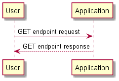

lab3
Contents:
Wprowadzenie
Instalacja
Architektura
Diagram UML
Diagram sekwencji
REST API
lab3
»
Architektura
View page source
Architektura
¶
Diagram UML
¶
Diagram sekwencji
¶

![class Lab3Application {
{static} + main(args: String[]): void
+ dataBootstrap(repository: CustomerRepository) CommandLineRunner
}
interface CustomerRepository {
{abstract} findByLastName(lastName: String): List<Customer>
{abstract} findById(id: Long): Customer
}
class CustomerController {
- CustomerRepository: CustomerRepository
+ CustomerController(): CustomerController
+ getUserById(customerId: Long): Customer
+ getCustomers(): Iterable<Customer>
}
class Customer {
- id: Long
- firstName: String
- lastName: String
# Customer(): Customer
+ Customer(firstName: String, lastName: String): Customer
+ toString(): String
}
Lab3Application -- CustomerRepository
CustomerController -- Customer
CustomerController "1" *-- "1" CustomerRepository](_images/plantuml-2940c48c22369ca2529bc59b950b70b04edeeca2.png)